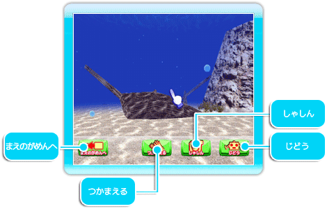
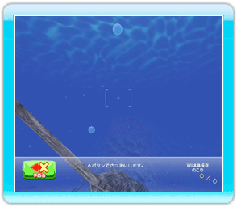
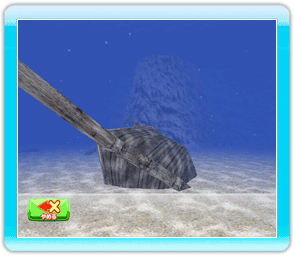

コントロールスティックを動かしてみましょう。
視点の移動を行うことができます。
海の中では、Ｃボタンを押すと視点の浮上、Ｚボタンを押すと潜水を行うことができます。
※島ではＣボタンＺボタンの使用はできません。

ポインターを画面の外へ移動させると、メニューがきえます。
モード選択画面、またはおえかき画面へもどります。
たんけん画面の中にいる絵をつかまえることができます。
つかまえたい絵をポインターで選択して、Ａボタンで決定します。
絵をつかまえると、おえかき画面へ移動します。
つかまえた絵にさらに描き加えを行うことができます。
探検中の画面の撮影することができます。
しゃしんボタンをポインターで選択して、Ａボタンで決定してください。撮影画面が表示されます。

写真を撮るときは、Ａボタンを押してください。
撮った写真は１枚だけ持つことができます。
保存をしないと撮るごとに上書きされます。
Wiiへ
Wii本体に写真のデータを保存します。
Wii本体に写真が保存できる枚数は最大で１０枚です。
保存した写真のデータは、たんけんアルバムで、SDカード（別売）に保存したり、消去することができます。
SDカードへ
SDカード（別売）に写真データを保存します。
けす
今撮った写真のデータを消去します。
視点の自動操縦モードになります。

やめる
通常のたんけん画面へもどります。